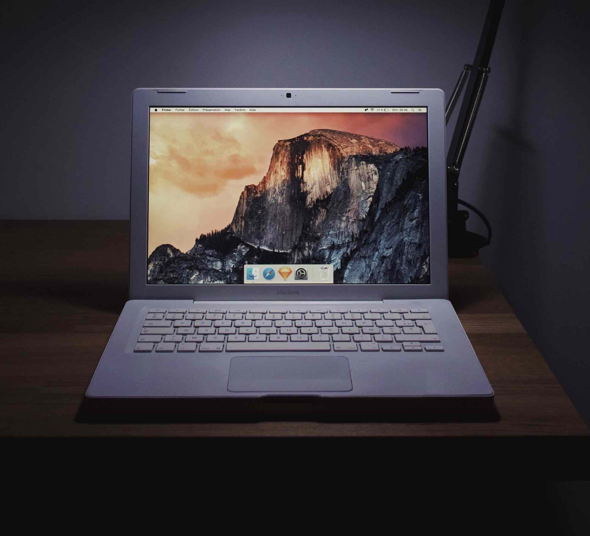
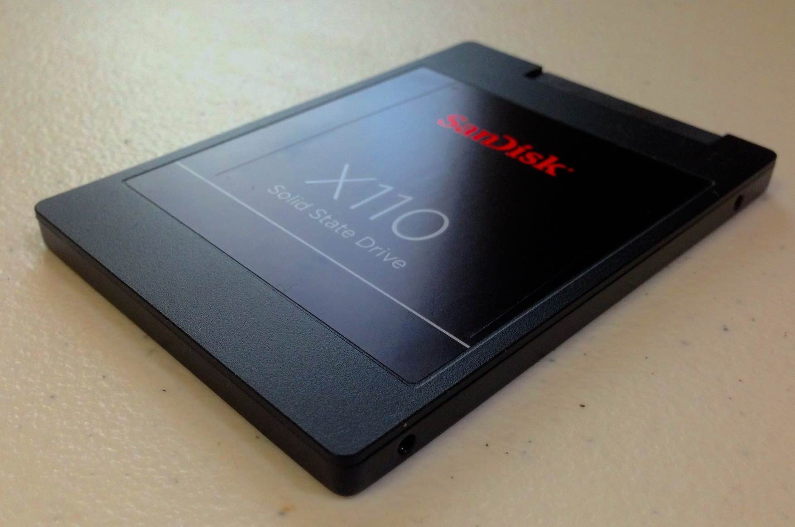
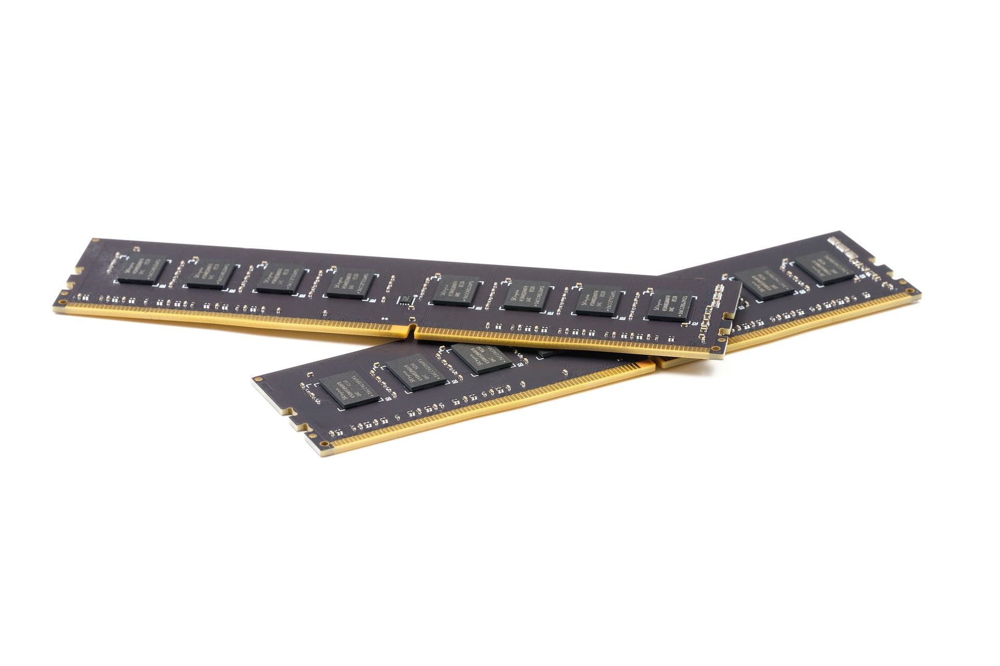
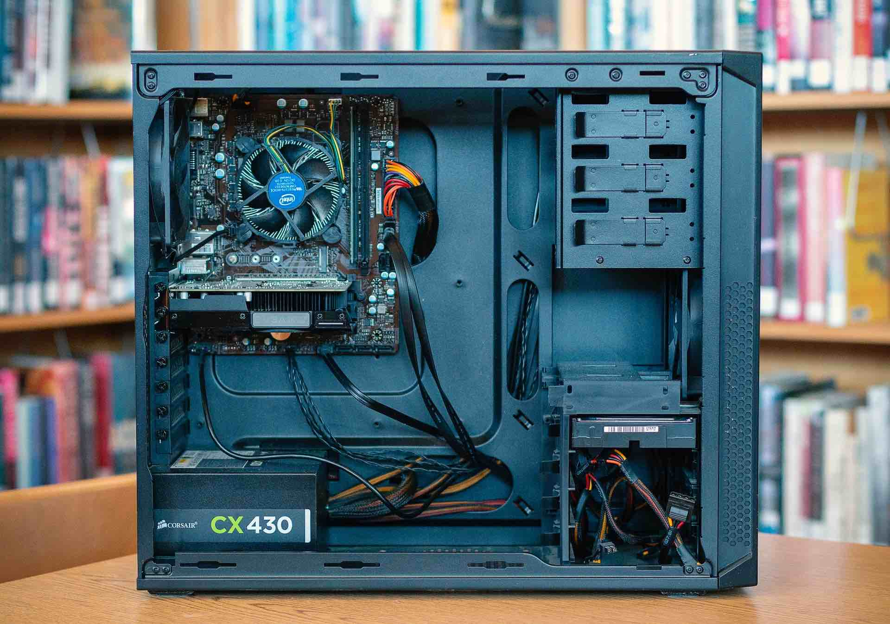

It is undeniable that old computers have a charm to them. It's like an old friend. There are many ways to breath new life into old computers. Speeding them up means they can be useful once more. Moreover, with a few changes here and there, you can put an old computer to good use, either simply as a usable desktop or a mean, lean, server machine!
I will go from easiest to hardest (i.e. 1 is easiest, 2 is a little more difficult, etc.), but none of these are rocket science and certainly nothing some patience and Googling can't fix.
Note: I will mix hardware changes and software changes. The ranking will also incorporate what has the largest perceived performance increase.
IMPORTANT: This is not a tutorial, rather a database for referring to when researching. Also, some of these may void warranties or break computers, so do these at your own risk, but these are not risky on the "risky" scale.
 Photo by Howard Bouchevereau on Unsplash
1. Changing from a Hard Disk Drive (Hard Drive or simply HDD) to a Solid State Drive (SSD)
This will arguably have the largest perceived performance boost. A hard drive (referred to as "spinning rust") physically spins around with a magnetic header that magnetizes portions of the spinning disk into 0's or 1's (magnetized and non-magnetized). On the other hand, SSDs have "NAND flashes". They use silicon and transistors to store 0's and 1's, making them "solid" and not moving. SSD's are much faster than traditional HDD's. A few years back, SSD technology was still new, so they were priced exorbitantly. However, as technology progressed, SSD prices have gotten cheaper and cheaper. On a system with no fans, an SSD will make the computer fully silent. SSD's also posses many more advantages other hard drives.

- - SSDs are 5-15 times faster than hard drives
- - The failure rate of a SSD is lower than a hard drive. Hard drives may also demagnetize over long durations of time, possibly corrupting data.
- - SSDs consume around half as much power as hard drives, as they do not spin or move in any form.
- - This will translate to a fast and snappy experience when opening files and applications, greatly increasing boot (restart) times and possibly increase the battery life on laptops.
Pros of an SSD
- - SSDs cost more than HDDs, but not by a significant margin nowadays
- - SSDs are available in smaller sizes than hard drives and do not hold as much data for the same price. However, space will not be a problem anymore with the third tip
Cons of an SSD
2. Installing (NOT DOWNLOADING) more RAM
Installing more RAM (random access memory) will benefit the system by allowing the system to store more data in a quickly accessible place. Memory and storage are two very different things. They both store data, but the data stored in RAM is volatile, meaning it does not stay there forever. However, it is much faster than storage. This means that frequently accessed data, for the operating system itself and more, are stored in RAM. With more RAM, the computer can store more things in there, meaning more things will be faster. This will lead to a snappy experience and faster performance. There are many types of RAM, so it is important to watch out for what type of RAM your computer may use.

- - SO-DIMM is mainly used for laptops. It is basically a type of RAM (I am generalizing here) that is small and can fit inside laptops
- - DIMM is used for desktops.
- - DDR3 and DDR4 are versions of RAM. Almost no computer can support both. It is important to watch out for which one your computer uses. DDR3 is older and DDR4 is newer. Almost every laptop built in the last 5 years uses DDR4, but you might want to double check just in case.
- - An example would be a laptop computer from 2013 having 4 gigabytes of DDR3 SO-DIMM memory (RAM), so you can upgrade it to 8 gigabytes in total by plugging in another stick of 4 gigabyte DDR3 SO-DIMM memory (RAM)
3. Running Linux
Many will wonder the same question: what is Linux? Linux is an open source (the code itself is freely available to everyone to view and revise) operating system created Linus Torvalds. Its philosophy is "with enough eyes, all bugs are shallow". A counterargument can be made here. If anyone can see the code, then anyone can find flaws and exploit them, right? That is in fact a fallacy, as those who maintain and support Linux will have already seen the flaw and fixed it. There are more good people in the world than bad, and those good people will fix flaws in Linux as time progresses. This means that Linux is very lightweight and easy to run compared to Windows or even macOS. Due to its open source nature, it is incredibly stable. It is so stable that almost every single server in the world runs a form of Linux. Wait... a form of Linux? That's right. Linus Torvalds created the Linux *kernel*, which is the central process that controls how the operating system handles everything in a system. However, there are thousands of different implementations of Linux in the world right now, all of them open source as well. Linux's advantages are many! A few of them are:
- - Fast and stable, good for old computers
- - Uses less space than macOS or Windows, though your milage may vary on this one.
- - Large "active" user-base, ready to help you troubleshoot
- - Works on almost all computers
- - Opens up a huge world for the computer
Here are some well-supported and popular Linux "distros" (distros are "distributions", or different
versions of Linux):
- - Ubuntu
- - Elementary OS (feels like macOS, great for those who are macOS users)
- - Manjaro
- - Debian
- - Linux Mint
- - Gallium OS (lightweight, great for everyday use!, mostly for Chromebooks)
- - MX Linux (extremely lightweight and feels like Windows!)
4. Putting the computer to good use
Obviously, a simple choice would be to install some Linux distro and use it like a normal computer. But what if I told you there was *another way*? With Linux, running a server, be it a website, file server, email server, code server, render farm, or whatever you want? I will introduce you to various uses for a computer other than just using it.
-
1. Apache HTTP Server
Apache HTTP Server is a web server, meaning it turns your computer into a website hosting machine! You have have it host websites in your local network, or to the entirety of the interwebs! It will serve a website will a few lines of code and some patience. What will you do with your brand new website? -
2. OpenMediaVault
This is a file server operating system. It hosts files that you can upload to and download from. It is based on Debian (a distro as mentioned above). It is simple to set up and can serve as a Samba, FTP, NFS, rsync, or SSH server (and more!). -
3. Code Server
Are you a programmer? Then you might want to try out code-server! It is a web-based implementation of Visual Studio Code and runs off of a computer, either locally or on the interwebs! You can choose to run this on an old computer, so you can code from your tablet, phone and computer while being fully synced up! -
4. File Server
Instead of running a full operating system designed for hosting files (like OpenMediaVault), you can set up a SMB (samba) or NFS (network file system) server on almost any Linux computer (Ubuntu suggested)!
5. Housekeeping
Have you been using a computer for the last 10 years but never bothered to clean it out? Now might be the time. Now, it is important to know that you might break your computer doing this if you do not do it properly. Cleaning out the computer will allow the fans to access airways that were previously clogged with dust and gross stuff, and a reapplication of thermal paste for better thermal conductivity can be the difference between your computer being a jet engine and a quiet mouse.
 Photo by Luke Hodde on Unsplash
-
1. Opening the computer
Google your computer model's teardown tutorials. You would want to get as deep into the computer as you can without doing unnecessary things. -
2. Clean It
Inside, you want to vacuum out all the dust and clean out the inside. -
3. Find the Heatsink
Then, you want to locate the heatsink (a metal plate, perhaps with fans next to it) -
4. Re-paste the Computer
Get some thermal paste, and open the heatsink. When the heatsink is open, remove the old thermal paste with isopropyl alcohol + cotton swab and apply a pea-sized drop of thermal paste on to the CPU and/or GPU. Again, this is not a tutorial, rather for reference and a database of things you should do. -
5. Reassemble the Computer
Put the heatsink back on, remembering to follow the numbers on the screws to apply even pressure to the heatsink so the thermal paste does not get squashed down on one side or another. You want the heatsink's pressure to evenly spread the thermal paste out onto the entire surface of the processor. This may be scary at first, but after doing it a few times (have confidence in yourself!), you will get very comfortable with applying thermal paste! Then, just reassemble the computer!